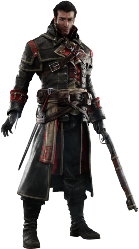

.
.
Shay Cormac was born on 12 September, 1731 in New York, to a family of Irish immigrants from Dublin. His mother died in childbirth, and his father was often absent from home due to his employment in the merchant marine, leaving Shay to be raised by his aunt. Living in a rough part of the city, Shay often found himself in trouble, but was constantly protected by his closest friend, Liam O'Brien.Eventually, Shay joined his father at sea, and although he missed the company of his friend, he eagerly began training in marksmanship and swordsmanship, even going as far to face down and shoot an attacking pirate captain, saving his father's ship. However, tragedy struck in 1747, when a fierce storm claimed the lives of Shay's father and several crew members.After meeting with Chevalier de la Vérendrye and his informant, Le Chasseur, Shay traveled to Mount Vernon, home of a noted Templar, Lawrence Washington, in order to intercept a package. Having recovered an air rifle from the shipment, Shay infiltrated the grounds of Washington's manor and witnessed a meeting between Lawrence and three other Templars: Samuel Smith, James Wardrop, and Jack Weeks. Lawrence assigned Smith and Wardrop to guard the box and the manuscript, respectively, before dismissing them. As Washington walked about the grounds of his manor in the midst of a garden party, Shay managed to blend in and assassinate him; as Shay and Liam made their escape, Shay expressed both disappointment and guilt for killing Lawrence, who was already suffering from a terminal case of tuberculosis.A few months later, Shay tracked down Samuel Smith at sea, who attempted to escape with the Precursor box in his possession. Although Smith's schooner led the Morrigan into a skirmish and attempted to deter the pursuers with burning oil, Shay gave chase and eventually assassinated Smith in his camp at Terra Nova, and recovered the artifact.